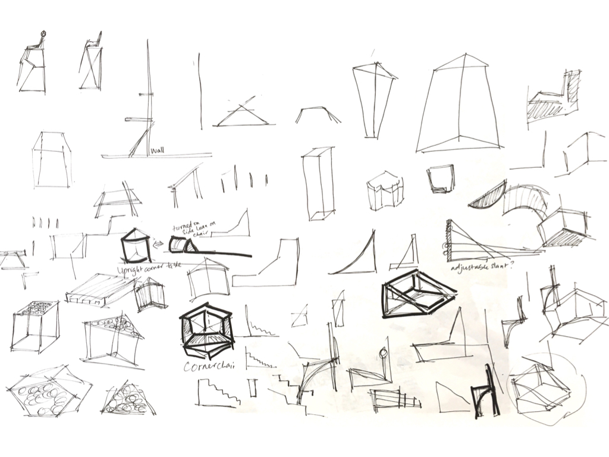

Designing a chair
Problem Statement
To design a chair with the following material constraints as follows:
1 nos. of 4’x4’ 0.5” tk plywood
2 nos. of 2”x4” 8’ pieces
12 nos. of 1” screws
12 nos. of 2.5” screws
12 nos. of 3” screws
To design a chair with the following material constraints as follows:
1 nos. of 4’x4’ 0.5” tk plywood
2 nos. of 2”x4” 8’ pieces
12 nos. of 1” screws
12 nos. of 2.5” screws
12 nos. of 3” screws
After various explorations, I decided to focus on corner chair. I was particularly captivated by the structure of a tetrahedron and wanted to adopt that geometry or try something with triangles.
A chair with two intersecting triangles, low-lying chair which had a clear seat portion and a backrest portion. However, one problem was that the arm rest portion seemed like it could hit the person because it was right in front of/ at the same plane as that of the person’s face. Also, the topmost vertex of the triangle seemed too constricting. I thought that might make the person feel trapped almost/ make the person fear that they might hit against the top any moment. Also, the seat space was wider than necessary so that felt a little awkward.
Instead of having the tilts in the backrest and the seat portion, I straightened it out. And gave the chair an overall geometry of a simple cube. It is still low-lying and can fit the corner.